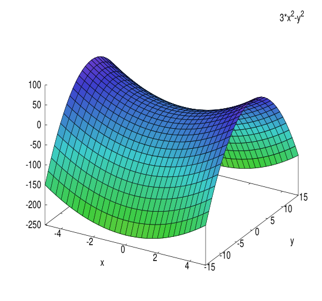
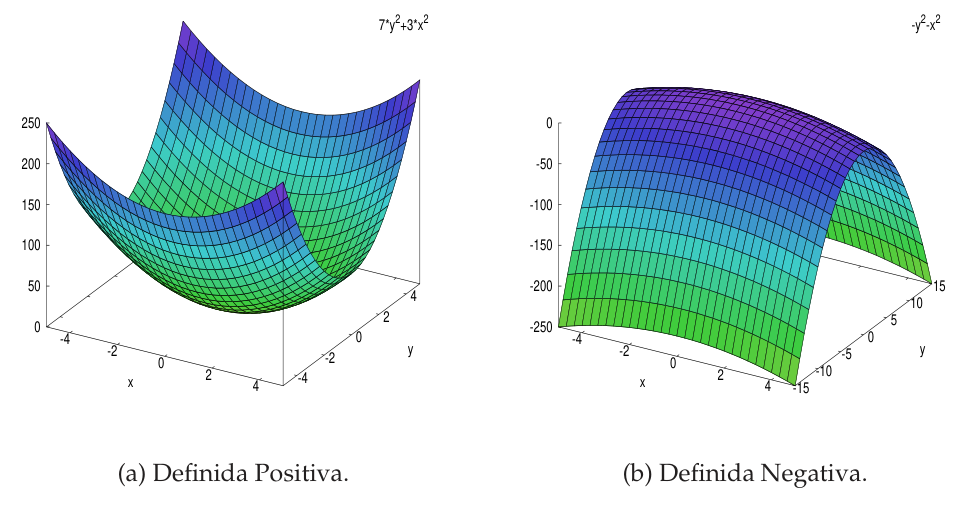

Clasificación de las formas cuadráticas
Dada una forma cuadrática $Q(x)=X^tAX$, ¿qué signo toma $Q(x)$ cuando recorres todos los vectores $x\neq0$? Si siempre es positiva, $Q$ es definida positiva; si a veces es positiva y a veces negativa, indefinida; y así hasta cinco clases. Aprenderás a decidirlo de tres maneras que deben coincidir: con los valores propios de $A$ (gracias a la diagonalización ortogonal del tema 5.3), con el criterio de Sylvester (menores principales, ideal para parámetros) y con los invariantes (rango y signatura). Además verás cómo se ve la clasificación: la superficie $z=Q(x_1,x_2)$ y las superficies de nivel $Q=c$ en $\mathbb R^3$.
0Antes de empezar U p.258-259
Una forma cuadrática es una máquina que a cada vector $x$ le asigna un número $Q(x)$. Clasificarla es preguntarse qué signos puede escupir esa máquina: ¿siempre positivos (como $x_1^2+x_2^2$, el cuadrado de la longitud)?, ¿siempre negativos?, ¿de los dos tipos (como $x_1^2-x_2^2$)?, ¿nunca negativos pero a veces cero? Comprobarlo con todos los vectores es imposible; el truco es que, al elegir una base buena (la de vectores propios ortonormales), la máquina se reduce a $Q=\lambda_1y_1^2+\dots+\lambda_ny_n^2$ y el signo de cada sumando lo decide el signo de su $\lambda_i$. Todo el tema es sacarle partido a esa frase.
U p.258 propioQué necesitas saber ya
- Del tema 6.2: $Q(x)=X^tAX$ con $A$ simétrica, cómo pasar del polinomio a la matriz (el término cruzado se reparte a medias), el rango de $Q$ y el cambio de base $A'=P^tAP$.
- Del tema 5.3: una matriz simétrica real tiene todos sus valores propios reales y una base ortonormal de vectores propios; con $P$ ortogonal (columnas = esa base), $P^tAP=P^{-1}AP=\Lambda$ es diagonal. Es la herramienta central de este tema.
- Del tema 4.2 y del 1.3: calcular valores propios $|A-\lambda I|=0$ y determinantes/menores.
- Del tema 5.1 (útil): un producto escalar es una forma bilineal simétrica definida positiva; aquí se explica qué significa «definida positiva».
Mapa del tema
| Apartado | Qué contiene | Dónde |
|---|---|---|
| 1 Las cinco clases | Def. 6.12: definida, semidefinida, indefinida; figuras 6.1 y 6.2 | U p.264-266 |
| 2 Forma canónica | Def. 6.10, Ej. 6.19-6.21; no es única; teorema de los ejes principales | U p.259-263 · L p.403 |
| 3 Signatura y ley de inercia | Teorema de Sylvester (inercia), Def. 6.11, Ej. 6.22 | U p.263-264 |
| 4 Clasificar por valores propios | Caracterización, por qué funciona, atajo 2×2; animación 2D | U p.266-267 · L p.405-406 |
| 5 Criterio de Sylvester | Menores principales; «⇔» para definidas, «⇒» para semidefinidas | U p.267-268 |
| 6 Invariantes | Rango y signatura; cuadro de clasificación | U p.268-270 |
| 7 Superficies de nivel | Cómo se ve cada clase en $\mathbb R^3$; componente 3D | P (anticipo de 6.4 y 6.5) |
| 8 Tabla Lay ↔ U | Vocabulario y alcance | L §7.1-7.3 |
| 9 Ejercicios del libro | E 6.17–6.24 + 3 ejemplos propios | E pp.216-221 |
| 10 Ejemplos de examen | 5 ejercicios y 2 apartados de problema, por método | X |
| 11 Chuleta | Recetas, hipótesis, lista de comprobación, errores | — |
(a) Clasificar una forma cuadrática dada por su polinomio o su matriz (E 6.19-6.21; sale casi todos los años). (b) Forma canónica y base en la que se obtiene (E 6.17, 6.18; Feb. 2018, Feb. 2022). (c) Sylvester con parámetro: «¿para qué valores de $a$ es definida positiva?» (E 6.23; Feb. 2025, Feb. 2026) o «semidefinida positiva» (E 6.24). (d) Rango y signatura (E 6.22; Ene. 2022, Sept. 2025). (e) Preguntas de test del estilo «cierta/falsa» sobre un parámetro. Lo que se valora es el razonamiento: nombra el criterio que usas y comprueba que se cumplen sus hipótesis.
propio- Notación. Se escribe $Q(x)=X^tAX$ con $X$ la columna de coordenadas; «sig» es la signatura en el sentido de U (número de coeficientes positivos de una forma canónica), no «positivos menos negativos» como en otros libros.
- Orden de $\Lambda$ y $P$. Si $P=(u_1\,u_2\,\dots)$ tiene los vectores propios en un orden, $\Lambda$ lleva los valores propios en ese mismo orden.
- Congruencia, no semejanza. Para formas cuadráticas la matriz nueva es $P^tAP$. Sólo si $P$ es ortogonal coincide con $P^{-1}AP=\Lambda$. Con vectores propios sin normalizar los signos salen bien, pero los números no.
- Erratas de E (se avisan donde aparecen): E 6.18 da la base $\{(1,-1),(1,1)\}$ sin normalizar y afirma $-x_1^2+3x_2^2$ (con esa base sale $-2x_1'^2+6x_2'^2$); E 6.20 escribe $+1$ fuera de la diagonal de $A-\lambda I$ cuando es $-1$; E 6.23 escribe «$\triangle_3=4$» dos veces (el primero es $\Delta_2=4$); E 6.17 etiqueta como «$\lambda_2=2$» al valor propio que en su lista es $\lambda_3$ y habla de «cuádrica» donde debe decir «forma cuadrática». E 6.24 no justifica que sólo $\pm\sqrt2$ sirvan (falta la condición necesaria $|A|=0$).
- Errata de la oficial de Feb. 2024 (1.ª sem.) P6 (desarrollada en el Bloque I de los ejemplos de examen): usa una base sin normalizar y escribe $2x_1^2-3x_2^2$; en esa base sale $10x_1'^2-15x_2'^2$. Es el mismo fallo que E 6.18.
- Erratas de la edición electrónica de U. En el texto extraído se pierden los signos «≠» de la Def. 6.12, del cuadro de invariantes (p.269) y del criterio de Sylvester; se han comprobado en el PDF y aquí aparecen restituidos. El Ejemplo 6.21 (p.262) debe leerse $Q=x_1'^2+8x_3'^2$.
- Método de Lagrange (completar cuadrados). Ni U ni Lay lo usan en este tema (diagonalizan siempre con valores propios). Aquí sólo aparece como comprobación propia.
1Las cinco clases de formas cuadráticas U p.264-266 L p.405
En $\mathbb R^2$ puedes dibujar $Q$ como una superficie: la altura sobre el punto $(x_1,x_2)$ es $z=Q(x_1,x_2)$. Siempre pasa por el origen (porque $Q(0)=0$) y, como $Q(\lambda x)=\lambda^2Q(x)$, sube o baja como una parábola en cada dirección. Según el signo de $Q$ en las distintas direcciones sale: un cuenco (todo positivo: definida positiva, p. ej. $x_1^2+x_2^2$), una cúpula (todo negativo: definida negativa, $-x_1^2-x_2^2$), una silla de montar (sube en un sentido y baja en el otro: indefinida, $x_1^2-x_2^2$), o un canal (sube en una dirección y es plano en otra: semidefinida, $x_1^2$, que vale 0 a lo largo de todo el eje $x_2$).
U p.264-266 L p.405 propioSea $Q:E\to\mathbb R$ una forma cuadrática, $Q(x)=X^tAX$. Se dice que $Q$ es:
- Definida positiva (DP) si $Q(x)>0$ para todo $x\neq0$.
- Definida negativa (DN) si $Q(x)<0$ para todo $x\neq0$.
- Semidefinida positiva (SP) si $Q(x)\ge0$ para todo $x$ y existe $x\neq0$ con $Q(x)=0$.
- Semidefinida negativa (SN) si $Q(x)\le0$ para todo $x$ y existe $x\neq0$ con $Q(x)=0$.
- Indefinida (o de signo variable) si existen $x_0,x_1$ con $Q(x_0)>0$ y $Q(x_1)<0$.
Siempre $Q(0)=0$, por eso «definida» se exige sólo para $x\neq0$.
U p.264 L p.405

- Se reconoce un cuadrado perfecto: $Q(x)=(x_1+3x_2)^2$.
- Un cuadrado nunca es negativo: $Q(x)\ge0$ para todo $x$.
- Pero se anula en vectores no nulos: $Q(-3,1)=(-3+3)^2=0$ con $(-3,1)\neq(0,0)$. (Se anula en toda la recta $x_1+3x_2=0$: el «fondo del canal».)
- Luego es semidefinida positiva (no definida, porque se anula en un $x\neq0$).
U comenta además: «en general es imposible comprobar la condición dada para todos los vectores», por eso se buscan criterios (siguientes apartados).
U p.265| $Q$ | Clase | Justificación con la definición |
|---|---|---|
| $x_1^2+x_2^2$ | DP | suma de cuadrados; es 0 sólo si $x_1=x_2=0$ |
| $-x_1^2-2x_2^2$ | DN | es $-(\text{suma de cuadrados})$ |
| $x_1^2$ (en $\mathbb R^2$) | SP | $\ge0$ y $Q(0,1)=0$ con $(0,1)\neq0$ |
| $x_1^2-x_2^2$ | indefinida | $Q(1,0)=1>0$ y $Q(0,1)=-1<0$ |
- «Semidefinida» exige que se anule en algún $x\neq0$. Si $Q\ge0$ pero sólo se anula en $x=0$, es definida positiva. (U Def. 6.12 separa los dos casos; Lay agrupa «semidefinida» de forma más laxa: manda U.)
- Una forma indefinida no es «semi» nada: Lay lo recuerda en su ejercicio 22 d) (p. 407): «una forma cuadrática indefinida es positiva semidefinida o negativa semidefinida» es falso.
- Para refutar «definida positiva» basta un vector con $Q(x)\le0$, $x\neq0$; para afirmarla hay que probar todos (por eso se necesitan los criterios).
2Forma canónica: quitar los términos cruzados U p.259-263 L p.403
Una elipse inclinada, como $5x_1^2-4x_1x_2+5x_2^2=48$, tiene un término cruzado $-4x_1x_2$ porque sus ejes no coinciden con los de coordenadas. Si giras los ejes hasta alinearlos con los de la elipse, la ecuación pasa a $3y_1^2+7y_2^2=48$: sólo cuadrados, y se lee de un vistazo (los números $3$ y $7$ son los valores propios de la matriz). Eso es una forma canónica: una base en la que $Q$ sólo tiene términos cuadrados. Y el giro lo da una matriz ortogonal $P$ con las columnas = vectores propios unitarios de $A$ (los ejes principales).
L p.403-404 propio$Q$ es una forma cuadrática canónica si $Q(x)=Q(x_1,\dots,x_n)=\sum_{i=1}^nk_ix_i^2$, con $k_i\in\mathbb R$. Es decir, su matriz es diagonal: no hay términos cruzados («rectangulares»). U recuerda (p.259): siempre es posible expresar una forma cuadrática de modo que su matriz asociada sea diagonal.
U p.259-261Sea $A$ la matriz simétrica de $Q$ en una base $B$. Por el tema 5.3 existe una base ortonormal $B'$ de vectores propios de $A$; con $P$ ortogonal (columnas = $B'$ en coordenadas de $B$), $P^tAP=P^{-1}AP=\Lambda=\operatorname{diag}(\lambda_1,\dots,\lambda_n)$. Como $A'=P^tAP$ es la matriz de $Q$ en $B'$ (tema 6.2), en las coordenadas $Y=P^{-1}X$: $$Q=\lambda_1y_1^2+\lambda_2y_2^2+\dots+\lambda_ny_n^2.$$ Los $\lambda_i$ son los valores propios de $A$ (repetidos según multiplicidad) y aparecen en el mismo orden que los vectores propios en $P$.
U p.259-261 L p.403- Matriz simétrica $A$ de $Q$ (desdoblando los cruzados) y su comprobación $X^tAX=Q$.
- Valores propios: $|A-\lambda I|=0$ (todos reales).
- Un vector propio por cada valor propio (si un $\lambda$ es doble, una base de su subespacio propio).
- Ortogonalizar y normalizar: vectores de valores propios distintos ya son ortogonales; dentro de un subespacio propio de dimensión $\ge2$ aplica Gram-Schmidt. Divide cada uno por su norma.
- $B'=\{u_1,\dots,u_n\}$; $P=(u_1\,\dots\,u_n)$; $Q=\sum\lambda_iy_i^2$ en las coordenadas de $B'$.
- Matriz. $A=\begin{pmatrix}1&0&0\\0&2&2\\0&2&2\end{pmatrix}$ ($4x_2x_3\Rightarrow a_{23}=a_{32}=2$). No es diagonal.
- Valores propios. $|A-\lambda I|=(1-\lambda)\big[(2-\lambda)^2-4\big]=(1-\lambda)\lambda(\lambda-4)$: $\lambda=1,\,0,\,4$. $\Lambda=\operatorname{diag}(1,0,4)$.
- Vectores propios. $\lambda=1$: $(1,0,0)$. $\lambda=0$: $(0,1,-1)$. $\lambda=4$: $(0,1,1)$.
- Ortonormal. Son ortogonales dos a dos (valores propios distintos; p. ej. $(0,1,-1)\cdot(0,1,1)=0$). Se normalizan: $B'=\{(1,0,0),\ \tfrac1{\sqrt2}(0,1,-1),\ \tfrac1{\sqrt2}(0,1,1)\}$ y $P^tAP=\Lambda$.
- Forma canónica. $Q=y_1^2+0\cdot y_2^2+4y_3^2=y_1^2+4y_3^2$: sólo dos términos (el valor propio 0 «desaparece»).
Si en el ejemplo anterior tomas la base ortogonal pero sin normalizar $\{(1,0,0),(0,1,-1),(0,1,1)\}$, la matriz de $Q$ es $\operatorname{diag}(1,0,8)$ y $Q=y_1^2+8y_3^2$ (el $8$ es $4\cdot\|(0,1,1)\|^2=4\cdot2$). También es una forma canónica. U concluye (p.263): «La forma cuadrática canónica asociada a $Q$ no es única». Lo que no cambia son los signos (apartado 3). Con base ortogonal no normalizada, $P^tAP=\operatorname{diag}(\lambda_i\|v_i\|^2)$: los signos se conservan, los números no, y no es $P^{-1}AP$.
U p.262-263El mismo $Q=x_1^2+2x_2^2+4x_2x_3+2x_3^2=x_1^2+2(x_2+x_3)^2$ es otra forma canónica, $y_1^2+2y_2^2$ (con $y_1=x_1$, $y_2=x_2+x_3$, $y_3=x_3$ y $0\cdot y_3^2$), con coeficientes $1,\,2,\,0$ en vez de $1,\,4,\,0$ (o $1,\,0,\,4$). Tiene dos coeficientes positivos y uno nulo, igual que la anterior: es lo único que importa para clasificar. No es el método de U (que usa valores propios), pero sirve de control.
propioDar los valores propios como coeficientes de $Q$ en una base de vectores propios sin normalizar (o no ortogonales): sólo valen si $P$ es ortogonal. Y olvidar el orden: si $P=(u_2\ u_1)$, entonces $\Lambda=\operatorname{diag}(\lambda_2,\lambda_1)$. Es el fallo de E 6.18 y de Feb. 2024 (1.ª) P6.
3Ley de inercia y signatura U p.263-264
La forma canónica depende de la base (los números $1,4$ o $1,8$ del apartado anterior), pero algo no cambia: cuántos coeficientes son positivos, cuántos negativos y cuántos nulos. Es como medir la temperatura en °C o °F: el número cambia, pero «hace calor o hace frío» no. Esos conteos son lo que clasifica.
propioSi $\Lambda_1$ y $\Lambda_2$ son matrices diagonales asociadas a $Q$ en bases distintas, el número de elementos positivos y el número de elementos negativos de $\Lambda_1$ coinciden con los de $\Lambda_2$, independientemente de las bases utilizadas.
U p.263La signatura de $Q$, $\operatorname{sig}(Q)$, es el número de términos positivos no nulos ($k_i>0$) de una forma canónica asociada. Junto con el rango (número de $k_i\ne0$) son los dos invariantes que usaremos (apartado 6). Número de negativos $=\operatorname{rang}(Q)-\operatorname{sig}(Q)$; de nulos $=n-\operatorname{rang}(Q)$.
U p.263- $A=\begin{pmatrix}1&3\\3&9\end{pmatrix}$; $|A-\lambda I|=\lambda^2-10\lambda=\lambda(\lambda-10)$: $\lambda=0$ y $\lambda=10$, $\Lambda=\operatorname{diag}(0,10)$.
- Subespacios propios: $L_0=\langle(-3,1)\rangle$ y $L_{10}=\langle(1,3)\rangle$. En la base propia ortonormal $Q=10\,y_2^2$.
- Un coeficiente positivo y uno nulo: $\operatorname{sig}(Q)=1$, $\operatorname{rang}(Q)=1$.
- Control por otro camino: $Q=(x_1+3x_2)^2$, que en las coordenadas $y_1=x_1+3x_2$ es $y_1^2$ (coeficiente $1$ en vez de $10$): otra forma canónica, con los mismos signos ($+$ y $0$). Eso es la ley de inercia.
4Clasificar por los valores propios U p.266-267 L p.405-406
En la base de vectores propios, $Q=\lambda_1y_1^2+\dots+\lambda_ny_n^2$. Cada $y_i^2\ge0$, así que cada sumando tiene el signo de su $\lambda_i$. Si todos los $\lambda_i>0$, la suma es positiva salvo que todos los $y_i$ valgan 0, o sea $x=0$: definida positiva. Si alguno es negativo, basta tomar el vector que sólo tiene esa coordenada no nula y $Q$ es negativa ahí. Lo único que hay que saber de $A$ son los signos de sus valores propios.
L p.406 propioSea $A$ una matriz asociada a $Q$ y $\{\lambda_i\}$ todas sus raíces características (valores propios, contados con multiplicidad). Entonces:
| $Q$ es… | ⇔ | Valores propios de $A$ |
|---|---|---|
| Definida positiva | ⇔ | $\lambda_i>0$ para todo $i$ |
| Definida negativa | ⇔ | $\lambda_i<0$ para todo $i$ |
| Semidefinida positiva | ⇔ | $\lambda_i\ge0$ para todo $i$ y algún $\lambda_i=0$ |
| Semidefinida negativa | ⇔ | $\lambda_i\le0$ para todo $i$ y algún $\lambda_i=0$ |
| Indefinida | ⇔ | hay valores propios positivos y negativos (no nulos) |
Demostración (idea). Con $P$ ortogonal, $Q=\sum\lambda_iy_i^2$ con $Y=P^{-1}X$ y $X\neq0\iff Y\neq0$ ($P$ es regular). Si todos $\lambda_i>0$ y $Y\neq0$, la suma es $>0$. Si algún $\lambda_k\le0$, el vector con $Y=e_k$ da $Q=\lambda_k\le0$ con $X\neq0$. Con eso salen las cinco filas.
U p.266 L p.405- $A=\begin{pmatrix}1&-1\\-1&1\end{pmatrix}$ (el $-2x_1x_2$ se parte en $-1,-1$).
- $|A-\lambda I|=(1-\lambda)^2-1=\lambda(\lambda-2)$: $\lambda_1=0$, $\lambda_2=2$.
- Un valor propio positivo y uno nulo, ninguno negativo $\Rightarrow$ semidefinida positiva. Comprobación: $Q=(x_1-x_2)^2\ge0$ y $Q(1,1)=0$.
$Q(x)=3x_1^2+2x_2^2+x_3^2+4x_1x_2+4x_2x_3$, de matriz $A=\begin{pmatrix}3&2&0\\2&2&2\\0&2&1\end{pmatrix}$. Sus valores propios son $5,\ 2,\ -1$: hay positivos y uno negativo $\Rightarrow$ indefinida, «aunque todos los signos son positivos». Los signos de los coeficientes del polinomio no deciden; los de los valores propios, sí. (Comprobación con la traza y el determinante: $5+2-1=6=3+2+1$ y $5\cdot2\cdot(-1)=-10=|A|$.)
L p.406Para $A=\begin{pmatrix}a&b\\b&c\end{pmatrix}$ los valores propios cumplen $\lambda_1+\lambda_2=a+c$ y $\lambda_1\lambda_2=|A|$ (traza y determinante, porque $A$ es semejante a $\Lambda$). Entonces: $|A|<0\Rightarrow$ signos opuestos $\Rightarrow$ indefinida; $|A|>0\Rightarrow$ mismo signo: DP si $a>0$, DN si $a<0$; $|A|=0\Rightarrow$ un valor propio nulo: semidefinida (SP si $a+c>0$, SN si $a+c<0$) o la forma nula.
propio- Clasificar por los signos de los coeficientes del polinomio o de la diagonal de $A$ (Lay Ej. 6: $3,2,1$ positivos y es indefinida).
- Confundir «algún $\lambda_i=0$» con «semidefinida»: $\lambda_i\ge0$ para todo $i$ y alguno nulo. Con $\lambda=2,0,-1$ es indefinida.
- Calcular los valores propios de una matriz no simétrica $M$ con $Q=X^tMX$: hay que usar la simétrica $A=\tfrac12(M+M^t)$ (si no, los valores propios pueden ni ser reales).
5Criterio de Sylvester (menores principales) U p.267-268
Calcular valores propios de una matriz $3\times3$ obliga a resolver una ecuación de grado 3, y con un parámetro $a$ dentro es muy incómodo. El criterio de Sylvester se apoya sólo en determinantes de las esquinas superiores izquierdas de $A$ (los menores principales), que son polinomios sencillos en el parámetro. La idea: si miras sólo las primeras $k$ variables ($x_{k+1}=\dots=0$), $Q$ se reduce a una forma con matriz «la esquina $k\times k$», y su determinante $\Delta_k$ va dando información acumulada de los signos de los valores propios.
propioSi $A=(a_{ij})$ es $n\times n$, sus submatrices principales son las de la esquina superior izquierda y sus determinantes son: $$\Delta_1=a_{11},\qquad\Delta_2=\begin{vmatrix}a_{11}&a_{12}\\a_{21}&a_{22}\end{vmatrix},\ \dots,\ \Delta_{n-1},\qquad\Delta_n=|A|.$$
U p.267- $\Delta_1>0,\ \Delta_2>0,\ \dots,\ \Delta_{n-1}>0,\ |A|>0\ \Longleftrightarrow\ Q$ es definida positiva.
- $\Delta_1<0,\ \Delta_2>0,\ \Delta_3<0,\ \dots$ (signos alternos, empezando por $-$; el último $|A|$ con el signo que corresponda a su posición) $\Longleftrightarrow\ Q$ es definida negativa.
- $|A|=0$ y $\Delta_1>0,\ \Delta_2>0,\ \dots,\ \Delta_{n-1}>0\ \Longrightarrow\ Q$ es semidefinida positiva.
- $|A|=0$ y $\Delta_1<0,\ \Delta_2>0,\ \Delta_3<0,\ \dots,\ \Delta_{n-1}$ (alternando) $\Longrightarrow\ Q$ es semidefinida negativa.
- En otros casos se utiliza la clasificación por raíces características o por invariantes.
Avisos importantes (hipótesis). (1) Para las definidas el criterio es «⇔»: sirve para dar el conjunto exacto de valores de un parámetro. (2) Para las semidefinidas es sólo «⇒» (condición suficiente): si no se cumple, no se puede concluir que no sea semidefinida (p. ej. $\operatorname{diag}(0,1)$ es SP y tiene $\Delta_1=0$). (3) Con $n=2$, DN equivale a $\Delta_1<0$ y $|A|>0$; con $n=3$, a $\Delta_1<0,\ \Delta_2>0,\ |A|<0$. (4) Para indefinida no hay rama propia: es el «otro caso».
U p.267- $A=\begin{pmatrix}1&1&\tfrac12\\1&-2&0\\\tfrac12&0&-1\end{pmatrix}$ (cruzados partidos a la mitad).
- $\Delta_1=1>0$, $\Delta_2=\begin{vmatrix}1&1\\1&-2\end{vmatrix}=-3<0$, $|A|=\tfrac72$ (por Sarrus: $2+1+\tfrac12=\tfrac72$).
- Con $\Delta_1>0$ pero $\Delta_2<0$ no se cumple ninguna rama: Sylvester no decide.
- Se recurre a la definición con dos vectores: $Q(1,0,0)=1>0$ y $Q(-1,0,1)=1+0-1+0-1=-1<0$. Hay un valor positivo y otro negativo $\Rightarrow$ indefinida.
- $A=\begin{pmatrix}-1&1&0\\1&-2&0\\0&0&-3\end{pmatrix}$.
- $\Delta_1=-1<0$; $\Delta_2=\begin{vmatrix}-1&1\\1&-2\end{vmatrix}=2-1=1>0$; $\Delta_3=|A|=-3\cdot1=-3<0$.
- Signos $-,+,-$ (alternos, empezando por $-$) $\Rightarrow$ definida negativa.
- Control: valores propios $-3$ y $\tfrac{-3\pm\sqrt5}2$, todos negativos ✓.
- Escribe $A$ (desdoblando) y calcula $\Delta_1,\dots,\Delta_{n-1},|A|$.
- ¿Todos $>0$? $\Rightarrow$ DP. ¿Signos $-,+,-,\dots$? $\Rightarrow$ DN.
- ¿$|A|=0$ y los demás cumplen $+,+,\dots$ (o $-,+,\dots$)? $\Rightarrow$ SP (o SN).
- Si nada encaja: no concluyas nada. Busca dos vectores con $Q$ de signo opuesto (prueba $e_i$, $e_i\pm e_j$) o calcula valores propios.
- Con parámetro: escribe cada $\Delta_k$ como polinomio en el parámetro, resuelve las desigualdades de las ramas de «⇔» y intersecta las soluciones.
- Pensar que «$\Delta_1=0$» o «$\Delta_2<0$» significa «semidefinida». La rama SP exige $|A|=0$ y los $\Delta_k$ de orden $<n$ estrictamente positivos.
- Usar $|A|\ge0$ y $\Delta_k\ge0$ como criterio de «semidefinida positiva» (para ello hacen falta todos los menores principales, es decir, los formados con las mismas filas y columnas $i_1<\dots<i_k$ cualesquiera, no sólo los de la esquina superior izquierda; el criterio de U es una condición suficiente).
- Olvidar que el desdoblado deja $a_{ij}=\tfrac c2$: con un parámetro en un término cruzado, $ax_1x_2$ da $\tfrac a2$ en la matriz.
6Invariantes: rango y signatura U p.268-270
Los invariantes de $Q$ son las propiedades de cualquier matriz asociada que no dependen de la base. Son invariantes el rango y la signatura (el rango, por ser congruentes las matrices de $Q$; la signatura, por la ley de inercia).
U p.268Sea $\dim E=n$ y $A$ una matriz asociada a $Q$:
| $Q$ es… | ⇔ | rango y signatura |
|---|---|---|
| Definida positiva | ⇔ | $\operatorname{rang}(Q)=\operatorname{sig}(Q)=n$ |
| Definida negativa | ⇔ | $\operatorname{rang}(Q)=n$ y $\operatorname{sig}(Q)=0$ |
| Semidefinida positiva | ⇔ | $\operatorname{rang}(Q)=\operatorname{sig}(Q)<n$ |
| Semidefinida negativa | ⇔ | $\operatorname{rang}(Q)<n$ y $\operatorname{sig}(Q)=0$ |
| Indefinida | ⇔ | $\operatorname{rang}(Q)\neq\operatorname{sig}(Q)$ y $\operatorname{sig}(Q)\neq0$ |
Lectura: rango = número de coeficientes no nulos de la forma canónica; signatura = cuántos son positivos. Si todos los no nulos son positivos ($\operatorname{rang}=\operatorname{sig}$) no hay negativos; si ninguno es positivo ($\operatorname{sig}=0$) no hay positivos; la indefinida es cuando hay de los dos tipos.
U p.269- Ej. 6.26. $Q=2x_1^2+3x_1x_2+6x_2^2$, $A=\begin{pmatrix}2&\tfrac32\\\tfrac32&6\end{pmatrix}$, $\lambda^2-8\lambda+\tfrac{39}4=0\Rightarrow\lambda=\tfrac{13}2,\ \tfrac32$. Dos positivos: $\operatorname{sig}=2=\operatorname{rang}=n$ $\Rightarrow$ definida positiva.
- Ej. 6.27. $Q=x_1^2+2x_2^2+4x_2x_3+2x_3^2$ (la del apartado 2): $\lambda=1,0,4$; $\operatorname{sig}=2$, $\operatorname{rang}=2<n=3$ $\Rightarrow$ semidefinida positiva.
- Ej. 6.28. $Q=3x_1^2+2x_1x_2+2x_1x_3+4x_2x_3$, $A=\begin{pmatrix}3&1&1\\1&0&2\\1&2&0\end{pmatrix}$, $|A-\lambda I|=(\lambda+2)(-\lambda^2+5\lambda-4)=-(\lambda+2)(\lambda-1)(\lambda-4)=0\Rightarrow\lambda=-2,\ 1,\ 4$; $\operatorname{sig}=2$, $\operatorname{rang}=3$: $\operatorname{rang}\neq\operatorname{sig}$ y $\operatorname{sig}\neq0$ $\Rightarrow$ indefinida.
Como $\operatorname{tr}A=\sum\lambda_i$ y $|A|=\prod\lambda_i$, el signo de $|A|$ te da la paridad del número de valores propios negativos ($|A|<0$: uno o tres; $|A|>0$: cero o dos) y la traza ayuda a descartar casos. Si te dan un vector propio, $Av=\lambda v$ proporciona un valor propio gratis y los otros salen de la traza y el determinante (ver Sept. 2025, P8).
propio7Superficies de nivel: cómo se ve cada clase en $\mathbb R^3$ propio
En el apartado 1 la clasificación se veía como la gráfica $z=Q(x_1,x_2)$ en $\mathbb R^3$. En $\mathbb R^3$ no puedes dibujar la gráfica (sería de dimensión 4), pero sí las superficies de nivel $Q(x)=c$, los puntos donde la forma vale exactamente $c$ (como las curvas de nivel de un mapa topográfico, pero una dimensión más). En la base de ejes principales, $\lambda_1y_1^2+\lambda_2y_2^2+\lambda_3y_3^2=c$ y la signatura decide la forma:
| Signos de $\lambda$ | $Q=c>0$ | $Q=0$ |
|---|---|---|
| $+,+,+$ (DP) | elipsoide | sólo el origen |
| $+,+,-$ (indefinida) | hiperboloide de una hoja | cono |
| $+,-,-$ (indefinida) | hiperboloide de dos hojas | cono |
| $+,+,0$ (SP) | cilindro elíptico | una recta (el eje) |
| $+,-,0$ (indefinida) | cilindro hiperbólico | dos planos secantes |
| $+,0,0$ (SP) | dos planos paralelos | un plano |
| $-,-,-$ (DN) | vacío (con $c<0$: elipsoide) | sólo el origen |
Para $c<0$ se intercambian los papeles de $+$ y $-$. El cono $Q=0$ separa la zona donde $Q>0$ de la zona donde $Q<0$. En el tema 6.5 se estudian estas superficies con traslaciones incluidas (cuádricas); aquí sólo interesa que cada clase tiene «su» forma.
propio- Carga «Elipsoide» y mueve $c$: para $c>0$ se infla; para $c<0$ desaparece (vacío), porque $Q\ge0$ en todas partes.
- Carga «Una hoja» y «Dos hojas» y pasa $c$ de positivo a negativo: la una hoja se convierte en dos hojas (¡con el mismo $A$!). El cono gris es la frontera entre ambas.
- Carga «Cilindro (SP)» (U Ej. 6.19): el valor propio $0$ da una dirección en la que $Q$ no cambia; la superficie se extiende indefinidamente a lo largo de esa flecha gris.
- Compara los menores de Sylvester que escribe debajo con los valores propios: deben llevar a la misma clase.
8Tabla Lay ↔ U: vocabulario y alcance L p.395-411
Lay trata la clasificación sólo por valores propios (§7.2). No tiene el criterio de Sylvester ni los invariantes (rango y signatura), y no usa el método de Lagrange. Si algo contradice a U, manda U. §7.3 (optimización restringida) no es materia de este tema.
| Concepto en U (este tema) | En Lay | Comentario |
|---|---|---|
| $A$ simétrica es diagonalizable con $P$ ortogonal ($\Lambda=P^tAP$) | §7.1, Teoremas 2 y 3 (teorema espectral), p. 396-397 | Es el tema 5.3: la base de la forma canónica. |
| Forma canónica (Def. 6.10) | Teorema 4 «de los ejes principales», p. 403 ($x=Py$, $x^tAx=y^tDy$) | Las columnas de $P$ son los «ejes principales». Lay no usa la palabra «canónica». |
| Definida positiva / negativa / indefinida (Def. 6.12) | «Clasificación de formas cuadráticas», p. 405 | Lay llama «positiva definida», etc. La semidefinida la menciona aparte. |
| Caracterización por valores propios (p.266) | Teorema 5, p. 405 (demostración p. 406) | Lay cubre definida y indefinida; las semidefinidas (con $\lambda=0$) son la ampliación de U. |
| Signatura, rango, invariantes (Def. 6.11, 6.13) | — | Sólo en U. |
| Criterio de Sylvester (p.267) | — | Sólo en U. (Lay menciona, p. 406, la factorización de Cholesky $A=R^tR$, que existe sii $A$ es definida positiva.) |
| Interpretación de máximo y mínimo sobre $\|x\|=1$ | §7.3, Teoremas 6 y 7, p. 409-411 | Máx y mín de $x^tAx$ en la esfera unidad son el mayor y el menor valor propio. No se pide en este tema. |
9Ejercicios del libro, resueltos E p.216-221
La sección 6.3 de E empieza en la p.215 y tiene los ejercicios 6.17 a 6.24 (pp. 216-221). Se agrupan por método. El E 6.16 (rango) está en el tema 6.2.
Bloque I — Forma canónica en $\mathbb R^2$ (E 6.18, 6.19 A)
Ejercicio 6.18 — base en la que $Q=x_1^2+x_2^2+4x_1x_2$ es suma de cuadrados E p.217
Sea $Q(x_1,x_2)=x_1^2+x_2^2+4x_1x_2$ una forma cuadrática de $\mathbb R^2$. Se pide dar una base respecto de la cual $Q$ se pueda expresar como una suma de cuadrados.
La solución de E toma $B'=\{(1,-1),(1,1)\}$ sin normalizar y afirma que en ella $Q=-x_1^2+3x_2^2$. Con $P=\begin{pmatrix}1&1\\-1&1\end{pmatrix}$ resulta $P^tAP=\operatorname{diag}(-2,6)$, es decir, $Q=-2x_1'^2+6x_2'^2$ (sigue siendo suma de cuadrados, así que la base responde a lo pedido, pero la expresión escrita es la de la base normalizada). $\operatorname{diag}(-1,3)$ es $P^{-1}AP$ (semejanza), no $P^tAP$ (congruencia).
- Qué se pide. «Suma de cuadrados» = sin término cruzado = matriz diagonal = forma canónica (Def. 6.10). Hay que dar una base $B'$ tal que $P^tAP$ sea diagonal; sirve la ortonormal de vectores propios.
- Matriz. $a_{11}=a_{22}=1$ y $4x_1x_2\Rightarrow a_{12}=a_{21}=2$: $A=\begin{pmatrix}1&2\\2&1\end{pmatrix}$. Comprobación: $X^tAX=x_1^2+4x_1x_2+x_2^2$ ✓.
- Valores propios. $|A-\lambda I|=(1-\lambda)^2-4=\lambda^2-2\lambda-3=(\lambda-3)(\lambda+1)$: $\lambda=-1$ y $\lambda=3$.
- Vectores propios. $\lambda=-1$: $(A+I)X=0\iff x_1+x_2=0$, $v_1=(1,-1)$. $\lambda=3$: $(A-3I)X=0\iff x_1=x_2$, $v_2=(1,1)$.
- Ortonormalizar. $v_1\cdot v_2=1-1=0$: ya son ortogonales (valores propios distintos). Sólo se normaliza ($\|v_i\|=\sqrt2$): $B'=\big\{\tfrac1{\sqrt2}(1,-1),\ \tfrac1{\sqrt2}(1,1)\big\}$, $P=\tfrac1{\sqrt2}\begin{pmatrix}1&1\\-1&1\end{pmatrix}$.
- Expresión en $B'$. $P$ es ortogonal, luego $P^tAP=\operatorname{diag}(-1,3)$ y, con coordenadas $(x_1',x_2')$ respecto de $B'$, $Q=-x_1'^2+3x_2'^2$. Control: $Q(1,1)=6$, y $(1,1)=\sqrt2\,u_2$ tiene coordenadas $(0,\sqrt2)$: $3\cdot2=6$ ✓.
- Clasificación (comentario). Un coeficiente negativo y uno positivo: indefinida ($Q(1,-1)=-2<0$, $Q(1,1)=6>0$).
- Comprobación alternativa (completando cuadrados): $Q=(x_1+2x_2)^2-3x_2^2$, otra forma canónica con coeficientes $1,-3$: de nuevo un $+$ y un $-$ (ley de inercia).
Error típico: dar la base sin normalizar y escribir los valores propios como coeficientes: con $P$ no ortogonal, $P^tAP\neq P^{-1}AP$.
Ejercicio 6.19 — forma canónica y clasificación de $f=x_1y_1-2x_1y_2-2x_2y_1+3x_2y_2$ E p.218
Dada $f((x_1,x_2),(y_1,y_2))=x_1y_1-2x_1y_2-2x_2y_1+3x_2y_2$, si $Q$ es su forma cuadrática asociada se pide: A) La expresión canónica de $Q$. B) Clasificar la forma cuadrática.
- Matriz. $a_{ij}$ = coeficiente de $x_iy_j$: $A=\begin{pmatrix}1&-2\\-2&3\end{pmatrix}$, simétrica, luego $Q(x)=f(x,x)=x_1^2-4x_1x_2+3x_2^2$.
- A) Valores propios. $|A-\lambda I|=(1-\lambda)(3-\lambda)-4=\lambda^2-4\lambda-1=0\Rightarrow\lambda=\dfrac{4\pm\sqrt{20}}2=2\pm\sqrt5$.
- Vectores propios (el libro no los da). De la primera fila de $(A-\lambda I)X=0$: $(1-\lambda)x_1-2x_2=0$, luego $v=(2,\,1-\lambda)$: $v_1=(2,\,-1+\sqrt5)$ para $\lambda_1=2-\sqrt5$ y $v_2=(2,\,-1-\sqrt5)$ para $\lambda_2=2+\sqrt5$. Control: $v_1\cdot v_2=4+(\sqrt5-1)(-1-\sqrt5)=4+(1-5)=0$ ✓ (ortogonales).
- Normalizar: $\|v_{1}\|^2=4+(\sqrt5-1)^2=10-2\sqrt5$, $\|v_2\|^2=10+2\sqrt5$; $P=(u_1\ u_2)$ ortogonal.
- Expresión canónica: $Q=(2-\sqrt5)\,x_1'^2+(2+\sqrt5)\,x_2'^2$ (en las coordenadas de la base $\{u_1,u_2\}$).
- B) Clasificación. $\sqrt5>2$ (pues $5>4$) $\Rightarrow$ $2-\sqrt5<0<2+\sqrt5$: valores propios de ambos signos $\Rightarrow$ indefinida.
- Atajo sin raíces (2×2): $|A|=\lambda_1\lambda_2=3-4=-1<0\Rightarrow$ signos opuestos. Con vectores: $Q(1,0)=1>0$ y $Q(2,1)=4-8+3=-1<0$. Signatura 1, rango 2.
- Comprobación alternativa: $Q=(x_1-2x_2)^2-x_2^2$ (expandir: $x_1^2-4x_1x_2+4x_2^2-x_2^2$ ✓), forma canónica $y_1^2-y_2^2$: un $+$ y un $-$.
Error típico: aproximar $2-\sqrt5$ como «0» o decir «las raíces no son bonitas, así que no se puede»: sólo importa su signo.
Bloque II — Forma canónica en $\mathbb R^3$ (E 6.17)
Ejercicio 6.17 — subespacios propios y matriz de paso ortogonal de $2x_1x_2+2x_1x_3+2x_2x_3$ E p.216
Sabiendo que $2x_1x_2+2x_1x_3+2x_2x_3$ es la expresión de la forma cuadrática $Q$ en una base dada, se piden: A) Unas ecuaciones de los subespacios propios de la matriz asociada $A$. B) Una matriz de paso ortogonal que la diagonalice.
La solución oficial es correcta en lo esencial (su base ortonormal $\{\tfrac1{\sqrt2}(1,-1,0),\tfrac1{\sqrt6}(1,1,-2),\tfrac1{\sqrt3}(1,1,1)\}$ y su $P$ cumplen $P^tP=I$ y $P^tAP=\operatorname{diag}(-1,-1,2)$), pero: la obtiene «con Maxima» sin explicar y no es la que resulta de ortonormalizar la base que ella misma escribe $\{(1,0,-1),(0,1,-1),(1,1,1)\}$; llama a $\Lambda$ «semejante» a $A$ (con $P$ ortogonal es semejante y congruente; para formas cuadráticas lo relevante es la congruencia); etiqueta «$\lambda_2=2$» donde su lista dice $\lambda_3$; y su nota al margen dice «cuádrica» en lugar de «forma cuadrática». Aquí se sigue el camino de la receta; cualquier base ortonormal de $L_{-1}$ vale.
- Matriz. No hay cuadrados (diagonal nula) y cada cruzado $2x_ix_j$ da $a_{ij}=a_{ji}=1$: $A=\begin{pmatrix}0&1&1\\1&0&1\\1&1&0\end{pmatrix}$.
- Polinomio característico. Sumando las tres columnas a la primera, ésta queda $(2-\lambda)(1,1,1)^t$; restando luego la primera fila a las otras dos: $|A-\lambda I|=(2-\lambda)\begin{vmatrix}1&1&1\\0&-\lambda-1&0\\0&0&-\lambda-1\end{vmatrix}=(2-\lambda)(\lambda+1)^2$. Valores propios: $\lambda=-1$ (doble) y $\lambda=2$ (simple).
- A) Subespacios propios. $\lambda=-1$: $A+I$ es la matriz de unos, de rango 1: una sola ecuación, $L_{-1}:\ x_1+x_2+x_3=0$ (dimensión 2, igual a la multiplicidad). $\lambda=2$: $A-2I=\begin{pmatrix}-2&1&1\\1&-2&1\\1&1&-2\end{pmatrix}$ tiene rango 2 (las filas suman 0): $L_2:\ \begin{cases}-2x_1+x_2+x_3=0\\x_1-2x_2+x_3=0\end{cases}$, es decir, $L_2=\langle(1,1,1)\rangle$.
- B) Base ortonormal. En $L_2$: $u_3=\tfrac1{\sqrt3}(1,1,1)$. En $L_{-1}$, una base es $w_1=(1,0,-1)$, $w_2=(0,1,-1)$, pero no son ortogonales ($w_1\cdot w_2=1$): aquí el tema 5.3 no basta (sólo da ortogonalidad entre subespacios propios distintos). Gram-Schmidt dentro de $L_{-1}$: $e_1=w_1$, $e_2=w_2-\dfrac{w_2\cdot e_1}{e_1\cdot e_1}e_1=(0,1,-1)-\tfrac12(1,0,-1)=\big(-\tfrac12,1,-\tfrac12\big)\propto(-1,2,-1)$ (sigue en $L_{-1}$: $-1+2-1=0$ ✓). Normalizando: $u_1=\tfrac1{\sqrt2}(1,0,-1)$, $u_2=\tfrac1{\sqrt6}(-1,2,-1)$. Ambos son ortogonales a $u_3$ automáticamente.
- Matriz de paso ortogonal: $$P=\begin{pmatrix}\frac1{\sqrt2}&-\frac1{\sqrt6}&\frac1{\sqrt3}\\[2pt]0&\frac2{\sqrt6}&\frac1{\sqrt3}\\[2pt]-\frac1{\sqrt2}&-\frac1{\sqrt6}&\frac1{\sqrt3}\end{pmatrix},\qquad P^tP=I,\qquad P^tAP=\begin{pmatrix}-1&0&0\\0&-1&0\\0&0&2\end{pmatrix}.$$
- Forma canónica y clase. $Q=-x_1'^2-x_2'^2+2x_3'^2$: $\operatorname{sig}=1$, $\operatorname{rang}=3$ $\Rightarrow$ indefinida.
Error típico: normalizar $w_1,w_2$ sin ortogonalizarlos: $P$ no sería ortogonal y $P^tAP$ no sería $\Lambda$.
Bloque III — Clasificar por valores propios (E 6.19 B, 6.20, 6.21)
El apartado B del Ejercicio 6.19 (indefinida por el signo de $2\pm\sqrt5$) está resuelto en el Bloque I.
Ejercicio 6.20 — $Q=ax_1^2+2ax_1x_2+ax_2^2+(a-1)x_3^2$ con $a=-1$ E p.218
La forma cuadrática $Q:\mathbb R^3\to\mathbb R$ definida por $Q(x_1,x_2,x_3)=ax_1^2+2ax_1x_2+ax_2^2+(a-1)x_3^2$ con $a=-1$ es: A) Definida positiva. B) Semidefinida negativa.
En el desarrollo de E aparece $+1$ fuera de la diagonal de $A-\lambda I$; con $a=-1$ debe ser $-1$ ($2ax_1x_2\Rightarrow a_{12}=a=-1$). No cambia el polinomio característico (el término cruzado entra al cuadrado) ni el resultado.
- Con $a=-1$: $Q=-x_1^2-2x_1x_2-x_2^2-2x_3^2$, de matriz $A=\begin{pmatrix}-1&-1&0\\-1&-1&0\\0&0&-2\end{pmatrix}$.
- Valores propios. Es diagonal por bloques: $|A-\lambda I|=\big[(-1-\lambda)^2-1\big](-2-\lambda)=(\lambda^2+2\lambda)(-2-\lambda)=-\lambda(\lambda+2)^2$. Raíces: $\lambda=0$ (simple) y $\lambda=-2$ (doble).
- Clasificación. Todos $\le0$ y uno es 0 $\Rightarrow$ semidefinida negativa: B cierta, A falsa. (A se descarta enseguida: $Q(e_1)=a_{11}=-1<0$.)
- Comprobación directa: $Q=-(x_1+x_2)^2-2x_3^2\le0$ y $Q(1,-1,0)=0$ con $(1,-1,0)\neq0$.
- Con invariantes: forma canónica $-2y_1^2-2y_2^2$; $\operatorname{rang}=2<3$ y $\operatorname{sig}=0$ $\Rightarrow$ SN.
Error típico: conformarse con «$|A|=0$ luego es semidefinida» sin mirar el signo de los otros valores propios.
Ejercicio 6.21 — clasificar $x_1^2+2x_2^2+2x_3^2+4x_2x_3$ y $2x_1x_2+4x_1x_3+x_2^2-2x_2x_3$ E p.219
Clasifíquense las siguientes formas cuadráticas: A) $Q(x_1,x_2,x_3)=x_1^2+2x_2^2+2x_3^2+4x_2x_3$. B) $Q(x_1,x_2,x_3)=2x_1x_2+4x_1x_3+x_2^2-2x_2x_3$.
En B, E ve que $\Delta_1=0$ y que Sylvester no decide, y resuelve con los valores propios (signos mixtos $\Rightarrow$ indefinida). Está bien; aquí se añade que «$\Delta_1=0\Rightarrow$ no definida» por sí solo no basta para concluir «indefinida» (habría que descartar la semidefinida con $|A|\neq0$) y se dan además dos vectores testigo.
A)
- $A=\begin{pmatrix}1&0&0\\0&2&2\\0&2&2\end{pmatrix}$ (es la forma de U Ej. 6.19 y de Feb. 2018 A).
- $|A-\lambda I|=(1-\lambda)\big[(2-\lambda)^2-4\big]=(1-\lambda)\lambda(\lambda-4)$: $\lambda=1,\ 4,\ 0$.
- Todos $\ge0$ y uno nulo $\Rightarrow$ semidefinida positiva. Testigo: $Q(0,1,-1)=2+2-4=0$ con vector no nulo.
- Sylvester también lo confirma: $\Delta_1=1>0$, $\Delta_2=2>0$, $|A|=0$ (rama SP). Ambas vías coinciden.
B)
- Matriz. $a_{11}=0$, $a_{22}=1$, $a_{33}=0$; $2x_1x_2\Rightarrow a_{12}=1$; $4x_1x_3\Rightarrow a_{13}=2$; $-2x_2x_3\Rightarrow a_{23}=-1$: $A=\begin{pmatrix}0&1&2\\1&1&-1\\2&-1&0\end{pmatrix}$.
- Sylvester. $\Delta_1=0$, $\Delta_2=\begin{vmatrix}0&1\\1&1\end{vmatrix}=-1$, $|A|=0(0-1)-1(0+2)+2(-1-2)=-8$. Ninguna rama encaja ($\Delta_1=0$ no es $>0$ ni $<0$, y $|A|\neq0$): el criterio no decide.
- Lo que sí se sabe: $Q(e_1)=a_{11}=0$ con $e_1\neq0$ $\Rightarrow$ no es definida; y $|A|=-8\neq0\Rightarrow$ ningún valor propio es 0 $\Rightarrow$ no es semidefinida. Luego indefinida.
- Con dos vectores (la vía más rápida): $Q(0,1,0)=1>0$ y $Q(1,-1,0)=-2+1=-1<0$.
- Con valores propios: $|A-\lambda I|=-(\lambda-2)(\lambda^2+\lambda-4)$, raíces $2,\ \tfrac{-1+\sqrt{17}}2\approx1{,}56,\ \tfrac{-1-\sqrt{17}}2\approx-2{,}56$: signos mixtos $\Rightarrow$ indefinida; $\operatorname{sig}=2$, $\operatorname{rang}=3$.
Error típico: pensar que «$\Delta_1=0$» o «$\Delta_2<0$» significa automáticamente «semidefinida».
Bloque IV — Rango y signatura (E 6.22)
Ejercicio 6.22 — forma cuadrática de $f(x,y)=2x_1y_1-2x_1y_2-\dots+2x_3y_3$: ¿definida positiva? ¿rango 2? ¿signatura 3? E p.220
La forma cuadrática asociada a la forma bilineal definida por $f(x,y)=2x_1y_1-2x_1y_2-2x_2y_1-3x_2y_3-3x_3y_2-\tfrac12x_1y_3-\tfrac12x_3y_1+2x_3y_3$: A) Es definida positiva. B) Tiene rango 2. C) Tiene signatura 3.
- Matriz ($a_{ij}$ = coeficiente de $x_iy_j$): $A=\begin{pmatrix}2&-2&-\tfrac12\\-2&0&-3\\-\tfrac12&-3&2\end{pmatrix}$. Es simétrica, luego es la matriz de $Q$.
- Determinante (1.ª fila): $|A|=2(0-9)-(-2)\big(-4-\tfrac32\big)+\big(-\tfrac12\big)(6-0)=-18-11-3=-32$.
- A) Falsa. Si $Q$ fuese DP, todos los $\lambda_i>0$ y $|A|=\prod\lambda_i>0$; pero $|A|=-32<0$. (Más rápido: $Q(e_2)=a_{22}=0$ con $e_2\neq0$ contradice «$Q(x)>0$ para todo $x\neq0$».)
- B) Falsa. $|A|\neq0\Rightarrow\operatorname{rang}A=3=\operatorname{rang}Q$.
- C) Falsa. $\operatorname{sig}=3$ con $n=3$ y $\operatorname{rang}=3$ significaría DP, y A es falsa. De hecho $\operatorname{sig}=2$: $|A|<0\Rightarrow$ uno o tres valores propios negativos; como $\operatorname{tr}A=4>0$ no pueden ser los tres negativos $\Rightarrow$ uno negativo y dos positivos. Es indefinida (valores propios $\approx-2{,}92;\ 2{,}45;\ 4{,}47$).
- Ninguna de las tres afirmaciones es cierta, como dice el libro.
Bloque V — Sylvester con parámetro: definida positiva (E 6.23)
Ejercicio 6.23 — $Q=2x_1^2+\alpha x_2^2+2x_3^2+\alpha x_1x_3+2x_2x_3$ según $\alpha$ E p.220
Sea $Q:\mathbb R^3\to\mathbb R$ la forma cuadrática definida en la base canónica por $Q(x_1,x_2,x_3)=2x_1^2+\alpha x_2^2+2x_3^2+\alpha x_1x_3+2x_2x_3$ siendo $\alpha\in\mathbb R$. Entonces se verifica: A) $Q$ es definida positiva para cierto valor de $\alpha$. B) $Q$ es indefinida para cualquier valor de $\alpha$. C) $Q$ es definida negativa para ciertos valores de $\alpha$.
E escribe «$\triangle_3=4>0$ y $\triangle_3=4>0$»: el primero debe ser $\Delta_2=4$. El resultado es correcto.
- Matriz. $\alpha x_1x_3\Rightarrow a_{13}=\tfrac\alpha2$; $2x_2x_3\Rightarrow a_{23}=1$: $A=\begin{pmatrix}2&0&\alpha/2\\0&\alpha&1\\\alpha/2&1&2\end{pmatrix}$.
- Menores. $\Delta_1=2$; $\Delta_2=2\alpha$; $|A|=2(2\alpha-1)-0+\tfrac\alpha2\big(0-\tfrac{\alpha^2}2\big)=4\alpha-2-\tfrac{\alpha^3}4=\tfrac14(-\alpha^3+16\alpha-8)$.
- A) Cierta. Basta un valor. Con $\alpha=2$: $\Delta_1=2>0$, $\Delta_2=4>0$, $|A|=\tfrac14(-8+32-8)=4>0\Rightarrow$ DP por Sylvester (⇔). (Valores propios $2,\ 2\pm\sqrt2$, todos $>0$.)
- B) Falsa: para $\alpha=2$ es DP, no indefinida.
- C) Falsa: ser DN exige $\Delta_1<0$ y $\Delta_1=2$ para todo $\alpha$. Idea equivalente: $Q(e_1)=a_{11}=2>0$ siempre, lo que impide $Q<0$ en todo $x\neq0$.
- (Extra, no se pide) DP $\iff\alpha>0$ y $\alpha^3-16\alpha+8<0$, es decir $\alpha\in(r_1,r_2)$ con $r_1\approx0{,}508$ y $r_2\approx3{,}722$ (raíces no racionales de $\alpha^3-16\alpha+8$).
Bloque VI — Semidefinida con parámetro (E 6.24)
Ejercicio 6.24 — valores de $a$ para que $Q=x_1^2+4x_2^2+2x_3^2+2ax_1x_2+2x_1x_3$ sea semidefinida positiva E p.221
Se pide calcular los valores de $a$ para que la forma cuadrática $Q(x_1,x_2,x_3)=x_1^2+4x_2^2+2x_3^2+2ax_1x_2+2x_1x_3$ sea semidefinida positiva.
E dice «es evidente al comprobar $\triangle_1,\dots,|A|$» y no justifica que sólo $\pm\sqrt2$ sirvan: falta la necesidad de $|A|=0$ (paso 2). Como la rama SP de Sylvester es sólo «⇒», sin ese paso no está probado que no haya otros valores. En el examen, esa justificación es la que da los puntos.
- Matriz. $A=\begin{pmatrix}1&a&1\\a&4&0\\1&0&2\end{pmatrix}$.
- Condición necesaria: $|A|=0$. Si $Q$ es SP, algún valor propio es 0 y entonces $|A|=\prod\lambda_i=0$. $|A|=1(8-0)-a(2a-0)+1(0-4)=4-2a^2=0\iff a=\pm\sqrt2$. Sólo estos dos valores pueden servir.
- Condición suficiente (Sylvester, rama SP). Con $a=\pm\sqrt2$: $\Delta_1=1>0$, $\Delta_2=4-a^2=2>0$ y $|A|=0$ $\Rightarrow$ $Q$ es SP.
- Resultado: $Q$ es SP $\iff a=\pm\sqrt2$.
- Comprobación: para $a=\pm\sqrt2$ los valores propios son $0$ y $\tfrac{7\pm\sqrt5}2$ (ambos $>0$ porque $\sqrt5<7$) y $Q$ se anula en $\operatorname{Nuc}A=\langle(-2,\pm\tfrac{\sqrt2}2,1)\rangle$.
- (Para completar) $|a|<\sqrt2$: $\Delta_1=1$, $\Delta_2=4-a^2>0$, $|A|=4-2a^2>0$ $\Rightarrow$ DP. $|a|>\sqrt2$: $|A|<0$ (número impar de valores propios negativos) y como $Q(e_1)=1>0$ hay también uno positivo $\Rightarrow$ indefinida.
Error típico: aplicar la rama SP de Sylvester cuando algún $\Delta_i$ ($i<n$) vale 0: entonces el criterio no se aplica ($A=\operatorname{diag}(0,1)$ es SP con $\Delta_1=0$) y hay que usar valores propios.
Ejemplos propios (de fácil a difícil)
Propio P1 — clasificar tres formas de $\mathbb R^2$ con la receta 2×2 propio
Clasifica: a) $Q=2x_1^2+2x_1x_2+x_2^2$. b) $Q=-x_1^2+2x_1x_2-x_2^2$. c) $Q=x_1^2+6x_1x_2+x_2^2$.
- a) $A=\begin{pmatrix}2&1\\1&1\end{pmatrix}$: $\Delta_1=2>0$, $|A|=1>0$ $\Rightarrow$ DP (Sylvester ⇔). Control: $Q=(x_1+x_2)^2+x_1^2$ sólo se anula si $x_1=0$ y $x_1+x_2=0$, o sea $x=0$.
- b) $A=\begin{pmatrix}-1&1\\1&-1\end{pmatrix}$: $|A|=0$, $\Delta_1=-1<0$ $\Rightarrow$ SN. Valores propios $0$ y $-2$. Control: $Q=-(x_1-x_2)^2$, nula en $(1,1)$.
- c) $A=\begin{pmatrix}1&3\\3&1\end{pmatrix}$: $|A|=1-9=-8<0\Rightarrow$ valores propios de signo opuesto $\Rightarrow$ indefinida (son $4$ y $-2$). Testigos: $Q(1,0)=1>0$, $Q(1,-1)=1-6+1=-4<0$.
Error típico de c): «todos los coeficientes son positivos, luego es positiva». Lo decide la matriz, no los coeficientes (cf. Lay Ej. 6, p. 406).
Propio P2 — forma canónica en $\mathbb R^3$ con valor propio doble propio
$Q=2x_1^2+2x_2^2+2x_3^2+2x_1x_2+2x_1x_3+2x_2x_3$. Halla una base ortonormal en la que sea canónica y clasifícala.
- $A=\begin{pmatrix}2&1&1\\1&2&1\\1&1&2\end{pmatrix}$. Sumando las tres columnas a la 1.ª (como en E 6.17): $|A-\lambda I|=(4-\lambda)(1-\lambda)^2$. Valores propios $4$ (simple) y $1$ (doble).
- $L_4=\langle(1,1,1)\rangle$. $L_1$: $(A-I)X=0\iff x_1+x_2+x_3=0$; base $\{(1,-1,0),(1,1,-2)\}$, que ya es ortogonal ($1-1+0=0$; se ha elegido a propósito; con otra base habría que aplicar Gram-Schmidt).
- Normalizando, $P=\Big(\tfrac1{\sqrt3}(1,1,1)\ \ \tfrac1{\sqrt2}(1,-1,0)\ \ \tfrac1{\sqrt6}(1,1,-2)\Big)$ por columnas; $P^tP=I$, $P^tAP=\operatorname{diag}(4,1,1)$.
- $Q=4y_1^2+y_2^2+y_3^2$: $\operatorname{rang}=\operatorname{sig}=3=n\Rightarrow$ DP. Control con Sylvester: $\Delta_1=2$, $\Delta_2=3$, $|A|=4$, todos $>0$ ✓ (y $|A|=4\cdot1\cdot1$ ✓).
Propio P3 — clasificar para todo valor del parámetro (Sylvester no siempre basta) propio
$Q=a\,x_1^2+2x_1x_2+a\,x_2^2+x_3^2$, $a\in\mathbb R$. Clasifícala según $a$.
- $A=\begin{pmatrix}a&1&0\\1&a&0\\0&0&1\end{pmatrix}$; $\Delta_1=a$, $\Delta_2=a^2-1$, $|A|=a^2-1$.
- Valores propios (bloque $2\times2$ y el 1 aislado): $[(a-\lambda)^2-1](1-\lambda)=0\Rightarrow\lambda=a+1,\ a-1,\ 1$.
- Casos:
- $a>1$: $\Delta_1,\Delta_2,|A|>0\Rightarrow$ DP (o $a\pm1>0$ y $1>0$).
- $a=1$: valores propios $2,0,1\Rightarrow$ SP. Aquí la rama SP de Sylvester no se aplica ($\Delta_2=0$ no es $>0$): hay que ir a valores propios.
- $-1<a<1$: $a-1<0<a+1\Rightarrow$ indefinida.
- $a=-1$: valores propios $0,-2,1\Rightarrow$ indefinida (¡aunque $|A|=0$! Tener determinante nulo no implica semidefinida). Testigos: $Q(e_3)=1>0$, $Q(1,0,0)=-1<0$.
- $a<-1$: $a+1<0$, $a-1<0$, $1>0\Rightarrow$ indefinida.
- Nunca es DN ni SN, porque $Q(e_3)=a_{33}=1>0$ para todo $a$.
Error típico: concluir «semidefinida» en $a=-1$ sólo porque $|A|=0$.
10Ejemplos de examen X
De los 24 exámenes escaneados (feb. 2017 – feb. 2026 y sept. 2017–2025), 5 ejercicios de cuestiones y 2 apartados de problema tienen como contenido principal este tema. Se agrupan por método (los bloques I-IV de aquí corresponden a los métodos de los bloques I, II, IV y V de E 6.17-6.24 de arriba). Las soluciones oficiales son breves: aquí se desarrolla el razonamiento completo (el examen puntúa el proceso) y se avisa si alguna falla. Los de frontera con 5.3, 6.2 y 6.4 están al final en «Para practicar».
Bloque I — Forma canónica en $\mathbb R^2$
Feb. 2022 (tipo A2), ejercicio 6 — forma canónica de $Q=x_1^2+x_2^2+4x_1x_2$ X Feb. 2022 (A2) ej. 6
Si $Q(x_1,x_2)=x_1^2+x_2^2+4x_1x_2$ es una forma cuadrática de $\mathbb R^2$, se pide calcular una forma canónica asociada a $Q$.
- Es la misma forma de E 6.18: $A=\begin{pmatrix}1&2\\2&1\end{pmatrix}$, valores propios $-1$ y $3$ (vectores propios $(1,-1)$ y $(1,1)$).
- Base ortonormal de vectores propios, en el orden «primero $\lambda=3$»: $B'=\{\tfrac1{\sqrt2}(1,1),\ \tfrac1{\sqrt2}(1,-1)\}$, con $P^tAP=\operatorname{diag}(3,-1)$.
- Forma canónica: $Q=3x_1'^2-x_2'^2$ (coordenadas respecto de $B'$). Coincide con la oficial, que da $3x_1^2-x_2^2$.
- Para que la respuesta esté «debidamente justificada» hay que decir en qué base (o que es la base ortonormal de vectores propios): $3x_1^2-x_2^2$ a secas podría leerse como otra forma distinta en la base canónica.
- Con las cuentas del Bloque I: otra forma canónica válida (completando cuadrados) es $y_1^2-3y_2^2$; la de arriba y ésta tienen un $+$ y un $-$ (ley de inercia).
Feb. 2024 (1.ª semana), pregunta 6 — forma canónica de $Q=x_1^2+4x_1x_2-2x_2^2$ X Feb. 2024 (1.ª) P6
Sea $Q(x_1,x_2)=x_1^2+4x_1x_2-2x_2^2$ una forma cuadrática (definida con respecto a la base canónica $B$). Halle una expresión canónica de $Q$, es decir, halle una base con respecto a la cual $Q$ sólo tenga términos cuadrados.
La oficial da los valores propios $2$ y $-3$ y escribe los autovectores «$(2,1)$» y «$(1,-2)$», pero luego usa la base $B'=\{(2,1),(-1,2)\}$ (el segundo vector es proporcional al anterior, vale cualquiera) sin normalizar, y afirma $Q=2x_1'^2-3x_2'^2$. Con $P=\begin{pmatrix}2&-1\\1&2\end{pmatrix}$ resulta $P^tAP=\operatorname{diag}(10,-15)$, no $\operatorname{diag}(2,-3)$: $\operatorname{diag}(2,-3)$ es $P^{-1}AP$ (semejanza), y para formas cuadráticas rige la congruencia. Es el mismo fallo que E 6.18.
- Matriz. $A=\begin{pmatrix}1&2\\2&-2\end{pmatrix}$ ($4x_1x_2\Rightarrow a_{12}=a_{21}=2$).
- Valores propios. $|A-\lambda I|=(1-\lambda)(-2-\lambda)-4=\lambda^2+\lambda-6=(\lambda-2)(\lambda+3)$: $\lambda=2$ y $\lambda=-3$.
- Vectores propios. $\lambda=2$: $-x_1+2x_2=0\Rightarrow v_1=(2,1)$. $\lambda=-3$: $4x_1+2x_2=0\Rightarrow v_2=(-1,2)$ (la oficial escribe $(1,-2)$: es el mismo subespacio).
- Ortogonales: $v_1\cdot v_2=-2+2=0$ (valores propios distintos). Normalizar ($\|v_i\|=\sqrt5$): $B'=\{\tfrac1{\sqrt5}(2,1),\ \tfrac1{\sqrt5}(-1,2)\}$, $P=\tfrac1{\sqrt5}\begin{pmatrix}2&-1\\1&2\end{pmatrix}$ ortogonal.
- Forma canónica: $P^tAP=\operatorname{diag}(2,-3)$, es decir, $Q=2x_1'^2-3x_2'^2$ en las coordenadas de $B'$ (un coeficiente positivo y uno negativo: indefinida).
- Si se deja sin normalizar $\{(2,1),(-1,2)\}$, también es una base que responde a la pregunta (ortogonal), pero entonces $Q=10x_1'^2-15x_2'^2$ ($=2\cdot5$ y $-3\cdot5$, pues $\|v_i\|^2=5$).
Bloque II — Forma canónica en $\mathbb R^3$
Feb. 2018 (tipo A), problema b) — base en la que $Q=x_1^2+2x_2^2+4x_2x_3+2x_3^2$ es canónica X Feb. 2018 (A) prob. b)
Hallar una base en la que la forma cuadrática $Q(x_1,x_2,x_3)=x_1^2+2x_2^2+4x_2x_3+2x_3^2$ se exprese en forma canónica (sólo tiene términos cuadrados) (1 pto.).
La oficial sólo remite al «Ejemplo 6.19 del libro de teoría, página 259». Desarrollo completo:
- Matriz. $A=\begin{pmatrix}1&0&0\\0&2&2\\0&2&2\end{pmatrix}$ ($4x_2x_3\Rightarrow a_{23}=a_{32}=2$).
- Valores propios. Por la 1.ª fila: $|A-\lambda I|=(1-\lambda)\big[(2-\lambda)^2-4\big]=(1-\lambda)\lambda(\lambda-4)$: $\lambda=1,0,4$, todos simples.
- Vectores propios. $\lambda=1$: $\begin{cases}x_2+2x_3=0\\2x_2+x_3=0\end{cases}\Rightarrow x_2=x_3=0$: $v_1=(1,0,0)$. $\lambda=0$: $x_1=0$, $x_2+x_3=0$: $v_2=(0,1,-1)$. $\lambda=4$: $-3x_1=0$, $-2x_2+2x_3=0$: $v_3=(0,1,1)$.
- Ortonormal. Son ortogonales dos a dos (valores propios distintos; $v_2\cdot v_3=1-1=0$). Normalizando: $B'=\{(1,0,0),\ \tfrac1{\sqrt2}(0,1,-1),\ \tfrac1{\sqrt2}(0,1,1)\}$ y $P^tAP=\operatorname{diag}(1,0,4)$: $Q=x_1'^2+4x_3'^2$ (U Ej. 6.20).
- Otra respuesta válida (la pregunta sólo pide una base donde la matriz sea diagonal): con la base ortogonal sin normalizar $\{(1,0,0),(0,1,-1),(0,1,1)\}$, $P^tAP=\operatorname{diag}(1,0,8)$ y $Q=x_1'^2+8x_3'^2$ (U Ej. 6.21).
- Control (ley de inercia): completando cuadrados, $Q=x_1^2+2(x_2+x_3)^2$, matriz $\operatorname{diag}(1,2,0)$ en la base $\{(1,0,0),(0,1,0),(0,-1,1)\}$: de nuevo $+,+,0$.
Bloque III — Signatura, rango e invariantes
Ene. 2022 (tipo A1), ejercicio 6 — clasificar $Q$ de $\mathbb R^3$ con rango = signatura = 2 X Ene. 2022 (A1) ej. 6
Clasificar, si es posible, la forma cuadrática $Q$ de $\mathbb R^3$ tal que $\operatorname{rango}(Q)=\operatorname{signatura}(Q)=2$.
- Traducir los datos a una forma canónica. Existe una base en la que $Q=k_1x_1'^2+k_2x_2'^2+k_3x_3'^2$ (Def. 6.10). El rango es el número de $k_i\neq0$: hay dos no nulos y uno nulo. La signatura es el número de $k_i>0$: dos. Luego los dos no nulos son positivos: (reordenando) $k_1,k_2>0$, $k_3=0$.
- Clasificar. $Q=k_1x_1'^2+k_2x_2'^2\ge0$ para todo $x$, y el tercer vector de la base, $v_3\neq0$, da $Q(v_3)=0$ $\Rightarrow$ semidefinida positiva (Def. 6.12).
- Con el cuadro de invariantes (U p.269): $\operatorname{rang}=\operatorname{sig}=2<3=n\Rightarrow$ SP. Coincide con la oficial.
- «Si es posible»: sí lo es, porque rango y signatura son invariantes (Def. 6.13) y determinan los signos de cualquier forma canónica (ley de inercia). Ejemplo concreto: $Q=x_1^2+x_2^2$ en $\mathbb R^3$.
Error típico: contestar «definida positiva» porque «todos los términos son positivos»: falta uno (el nulo), y $Q$ se anula en $v_3\neq0$.
Sept. 2025, problema 8, 3.er apartado — signatura de $Q=6x_1^2+4x_1x_2+4x_1x_3+8x_2x_3$ X Sept. 2025 P8 (c)
Sea $Q(x_1,x_2,x_3)=6x_1^2+4x_1x_2+4x_1x_3+8x_2x_3$ una forma cuadrática. Halle la matriz $A$ asociada a $Q$. (0.5 PUNTOS) Calcule el autovalor correspondiente al autovector $(2,1,1)$ de $A$. (0.5 PUNTOS) Halle la signatura de $Q$. (1 PUNTO)
(El 1.er apartado, la matriz $A=\begin{pmatrix}6&2&2\\2&0&4\\2&4&0\end{pmatrix}$, está en el tema 6.2, y el 2.º, el autovalor de $(2,1,1)$, en el tema 4.2. Resultado: $A(2,1,1)^t=(16,8,8)^t=8\,(2,1,1)^t$, luego $\lambda=8$.)
3.er apartado.
- La signatura es el número de coeficientes positivos de una forma canónica; con $P$ ortogonal éstos son los valores propios de $A$. Hay que conocer sus signos.
- Polinomio característico (1.ª fila): $|A-\lambda I|=(6-\lambda)(\lambda^2-16)-2(-2\lambda-8)+2(8+2\lambda)=-\lambda^3+6\lambda^2+24\lambda-64$.
- Factorizar usando $\lambda=8$: $-\lambda^3+6\lambda^2+24\lambda-64=-(\lambda-8)(\lambda^2+2\lambda-8)=-(\lambda-8)(\lambda+4)(\lambda-2)$. Valores propios: $8,\ 2,\ -4$. (Atajo sin el polinomio: $\lambda_2+\lambda_3=\operatorname{tr}A-8=6-8=-2$ y $\lambda_2\lambda_3=|A|/8=-64/8=-8$, es decir, raíces de $t^2+2t-8=(t+4)(t-2)$.)
- Signatura: dos valores propios positivos ($8$ y $2$) $\Rightarrow$ $\operatorname{sig}Q=2$. Coincide con la oficial. Además $\operatorname{rang}=3$ y $\operatorname{sig}\notin\{0,3\}\Rightarrow$ indefinida (testigos: $Q(0,1,-1)=-8<0$, $Q(1,0,0)=6>0$).
Bloque IV — Sylvester con parámetro: definida positiva
Feb. 2026 (2.ª semana), pregunta 6 — $Q=2x_1^2+a\,x_1x_2+6x_2^2$ definida positiva X Feb. 2026 (2.ª) P6
Sea $Q$ la forma cuadrática de $\mathbb R^2$ definida por $Q(x_1,x_2)=2x_1^2+ax_1x_2+6x_2^2$ con $a\in\mathbb R$. Determine para qué valores del parámetro $a$ la forma cuadrática $Q$ es definida positiva.
- Matriz (desdoblando $ax_1x_2$): $A=\begin{pmatrix}2&a/2\\a/2&6\end{pmatrix}$.
- Sylvester (⇔): DP $\iff\Delta_1>0$ y $|A|>0$.
- $\Delta_1=2>0$ siempre.
- $|A|=12-\dfrac{a^2}4>0\iff a^2<48\iff|a|<\sqrt{48}=4\sqrt3$.
- Resultado: $Q$ es DP $\iff a\in(-4\sqrt3,\,4\sqrt3)$. Coincide con la oficial.
- Fuera del intervalo (para completar, no se pide): $|a|=4\sqrt3$ $\Rightarrow$ $|A|=0$, $\Delta_1>0$ $\Rightarrow$ SP; $|a|>4\sqrt3$ $\Rightarrow$ $|A|<0$ $\Rightarrow$ indefinida.
Error típico: poner $a$ en vez de $a/2$ fuera de la diagonal (saldría $|a|<2\sqrt3$); olvidar la raíz negativa ($a>-4\sqrt3$).
Feb. 2025 (2.ª semana), problema 8, 2.º apartado — Sylvester para $Q=2x_1^2+3x_2^2+4x_3^2-2x_1x_2+2a\,x_1x_3$ X Feb. 2025 (2.ª) P8 (b)
Sea $a\in\mathbb R$ y consideremos la forma cuadrática $Q(x_1,x_2,x_3)=2x_1^2+3x_2^2+4x_3^2-2x_1x_2+2ax_1x_3$. Halle la matriz asociada a $Q$ (0.5 PUNTOS). Use el criterio de Sylvester para determinar los valores de $a\in\mathbb R$ para los que $Q$ es definida positiva. (1.5 PUNTOS)
(El 1.er apartado está en el tema 6.2.)
- Matriz: $A=\begin{pmatrix}2&-1&a\\-1&3&0\\a&0&4\end{pmatrix}$.
- Menores principales: $\Delta_1=2>0$; $\Delta_2=\begin{vmatrix}2&-1\\-1&3\end{vmatrix}=6-1=5>0$; $\Delta_3=|A|$ por Sarrus: $2\cdot3\cdot4+(-1)\cdot0\cdot a+a\cdot(-1)\cdot0-a\cdot3\cdot a-0\cdot0\cdot2-4\cdot(-1)\cdot(-1)=24-3a^2-4=20-3a^2$.
- Condición (⇔): DP $\iff20-3a^2>0\iff a^2<\tfrac{20}3\iff|a|<\sqrt{\tfrac{20}3}=\tfrac{2\sqrt{15}}3\approx2{,}58$.
- Resultado: $a\in\Big(-\tfrac{2\sqrt{15}}3,\ \tfrac{2\sqrt{15}}3\Big)$. Coincide con la oficial (que lo escribe $(-\sqrt{20/3},\sqrt{20/3})$).
- Control: $a=3$ (fuera) da un valor propio $\approx-0{,}36<0$, luego no DP; en el borde $a=\sqrt{20/3}$ un valor propio es 0 (SP).
Para practicar — fronteras con otros temas (no se desarrollan aquí)
| Examen | Contenido | Tema |
|---|---|---|
| Feb. 2025 (2.ª sem.) P8 1.er apdo.; Sept. 2025 P8 1.er apdo. | Matriz de $Q$ a partir del polinomio | 6.2 |
| Feb. 2018 (B), problema b) | Invariantes de una cónica | 6.4 |
| Feb. 2019 (A), ejercicio 6 | Clasificación de cónicas por invariantes métricos | 6.4 |
| Feb. 2019 (B), ejercicio 6 | Cónica (elipse real) a partir de su matriz | 6.4 |
| Feb. 2020 (B), ejercicio 6 | Definir y citar los invariantes métricos de una cónica | 6.4 |
| Sept. 2017 (A1), ejercicio 6 | Tipo de cónica (parábola, elipse, recta doble…) | 6.4 |
| Ene. 2022 (A1), problema a) | Ecuación reducida de $x_1^2+4x_2^2-4x_1-16x_2+19=0$ | 6.4 |
11Chuleta, lista de comprobación y errores frecuentes
| Qué | Fórmula / regla | Hipótesis / aviso |
|---|---|---|
| Clasificación (Def. 6.12) | DP: $Q>0$ en $x\neq0$; DN: $<0$; SP: $\ge0$ y se anula en $x\neq0$; SN: igual con $\le$; indefinida: ambos signos | Un solo testigo basta para refutar; para afirmar hay que probar todos (criterios) |
| Forma canónica | $Q=\sum\lambda_iy_i^2$ con $P$ ortogonal, $\Lambda=P^tAP=P^{-1}AP$ | $A$ simétrica; vectores propios ortonormales (Gram-Schmidt en subespacios dobles); orden de $\Lambda$ = orden de $P$ |
| No unicidad | Base ortogonal sin normalizar: coeficientes $\lambda_i\|v_i\|^2$ | Los signos no cambian (ley de inercia) |
| Signatura, rango | sig = nº de coef. $>0$; rang = nº de coef. $\neq0$ de una forma canónica | Invariantes (no dependen de la base) |
| Por valores propios | DP: todos $>0$; DN: todos $<0$; SP: todos $\ge0$ y algún $0$; SN: todos $\le0$ y algún $0$; indefinida: de ambos signos | $A$ simétrica (si $Q=X^tMX$, usar $\tfrac12(M+M^t)$) |
| Por invariantes ($n=\dim E$) | DP: rg = sig = $n$; DN: rg = $n$, sig = 0; SP: rg = sig $<n$; SN: rg $<n$, sig = 0; indef.: rg ≠ sig y sig ≠ 0 | — |
| Sylvester: definidas | DP ⇔ todos $\Delta_k>0$; DN ⇔ $\Delta_1<0,\Delta_2>0,\Delta_3<0,\dots$ | «⇔»: da el conjunto exacto de un parámetro |
| Sylvester: semidefinidas | $|A|=0$ y $\Delta_1,\dots,\Delta_{n-1}>0$ ⇒ SP; $|A|=0$ y signos alternos desde $\Delta_1<0$ ⇒ SN | Sólo «⇒». Para «¿qué valores dan SP?»: necesario $|A|=0$, luego comprobar |
| Atajos | $\operatorname{tr}A=\sum\lambda_i$, $|A|=\prod\lambda_i$; 2×2: $|A|<0$ ⇒ indefinida | $|A|=0$ no implica semidefinida |
| Descartar «definida» | algún $a_{ii}\le0$ (porque $Q(e_i)=a_{ii}$) o $|A|$ de signo incompatible | Rápido en tests |
- Definir las cinco clases y justificarlas con la definición usando vectores concretos (U Ej. 6.23; E 6.20).
- Hallar una forma canónica y la base ortonormal en $\mathbb R^2$ y $\mathbb R^3$, con Gram-Schmidt en un subespacio propio doble (E 6.17-6.19; X Feb. 2018, Feb. 2022).
- Explicar por qué la forma canónica no es única y qué se conserva (ley de inercia; U Ej. 6.21-6.22).
- Clasificar por valores propios y por el atajo del determinante en 2×2 (E 6.19-6.21; U Ej. 6.24).
- Aplicar Sylvester, distinguir «⇔» y «⇒» y saber cuándo no decide (U Ej. 6.25; E 6.21 B).
- Estudiar con parámetro DP (Sylvester) y SP (necesario $|A|=0$ y comprobar) (E 6.23-6.24; X Feb. 2025, Feb. 2026).
- Calcular rango y signatura y clasificar por invariantes (E 6.22; U Ej. 6.26-6.28; X Ene. 2022, Sept. 2025).
- Asociar cada clase con su superficie de nivel en $\mathbb R^3$ (apartado 7).
- Detectar las erratas de E (6.17, 6.18, 6.20, 6.23, 6.24) y de Feb. 2024 (1.ª).
- Dar la forma canónica con vectores propios sin normalizar (E 6.18, Feb. 2024 1.ª) o sin ortogonalizar dentro de un subespacio propio doble (E 6.17).
- Usar $P^{-1}AP$ donde corresponde $P^tAP$: sólo coinciden con $P$ ortogonal.
- Clasificar por los signos de los coeficientes del polinomio o de la diagonal (Lay Ej. 6).
- «$|A|=0$ ⇒ semidefinida» (P3 con $a=-1$ es indefinida) y «algún $\Delta_i=0$ ⇒ semidefinida».
- Aplicar Sylvester con un $\Delta_i=0$ o con signos que no encajan en ninguna rama; olvidar que la rama SP es sólo «⇒».
- Poner $a$ en vez de $a/2$ fuera de la diagonal; olvidar la raíz negativa en $|a|<c$.
- Confundir «semidefinida» con «definida con algún 0»: la semidefinida se anula en un $x\neq0$.
- Dar la forma canónica sin decir la base ni el orden de los valores propios (Feb. 2022 A2).
- Creer que una indefinida es «semi» algo (Lay Ej. 22 d).